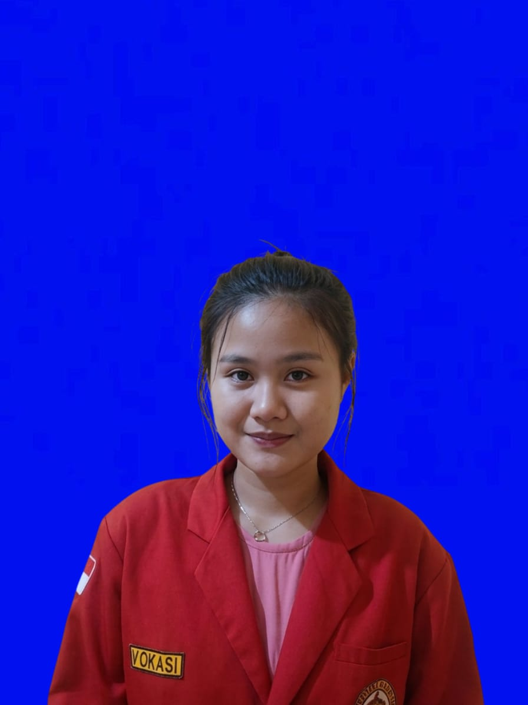
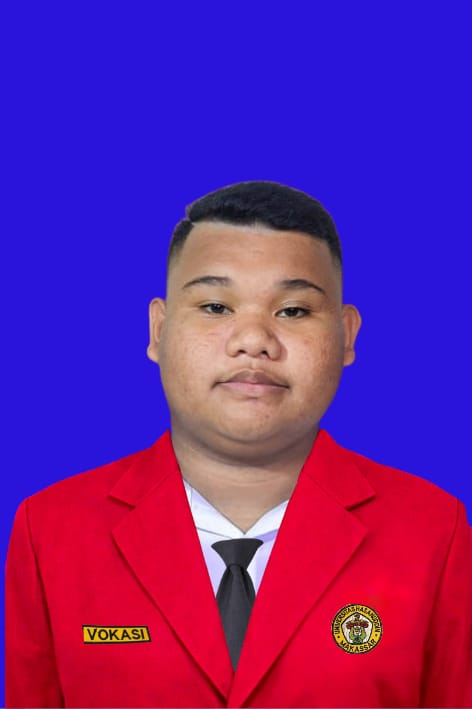
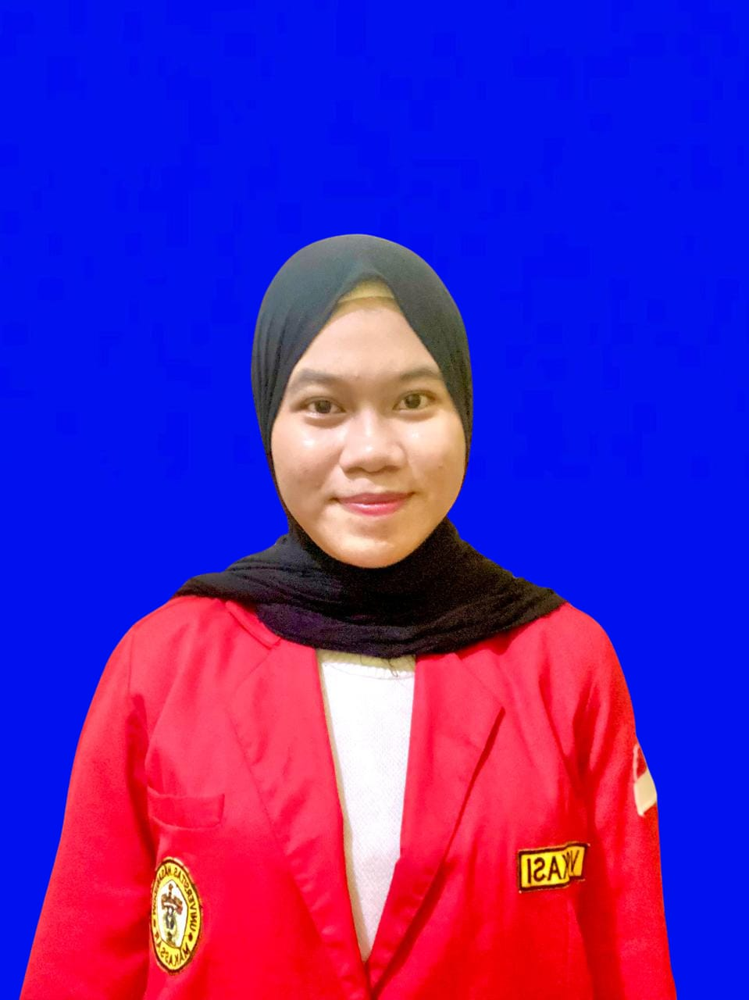
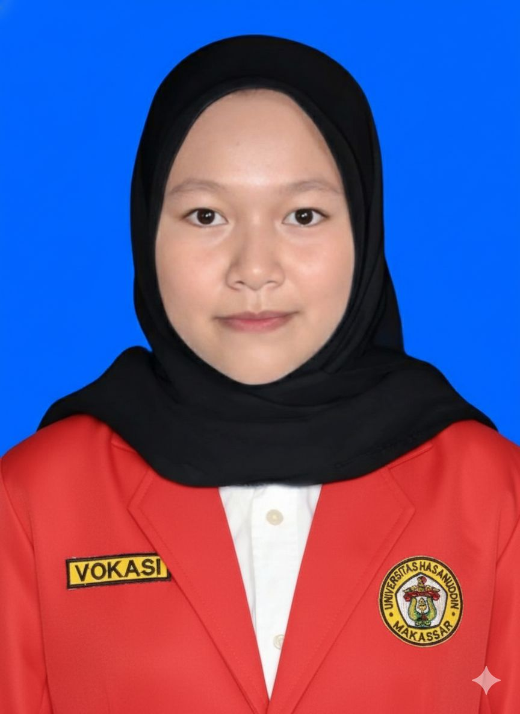

Prodi Paramedik Veteriner

Program Studi Paramedik Veteriner Fakultas Vokasi Universitas Hasanuddin merupakan program sarjana terapan yang mempelajari tentang manajemen kesehatan yang berhubungan dengan dunia hewan atau nama lainya kesehatan hewan.
Program ini hadir untuk mengakomodasi kebutuhan akan adanya tenaga ahli madya di berbagai bidang kesehatan hewan, produk asal hewan, dan bidang terkait lainnya.
Visi
“Menjadi pusat pendidikan vokasi paramedik veteriner yang terampil, inovatif, dan humanis berbasis Benua Maritim Indonesia”
Misi
- Menyelenggarakan proses pendidikan dan penelitian terapan dalam bidang veteriner yang unggul guna menghasilkan lulusan yang berkarakter, inovatif, dan profesional berdasarkan tuntutan kebutuhan dunia kerja secara nasional dan global.
- Melestarikan, mengembangkan, menemukan, dan menciptakan ilmu pengetahuan dalam bidang paramedik veteriner.
- Menyelenggarakan program pengabdian kepada masyarakat berbasis kerja sama pentahelix dan kesejahteraan hewan untuk kesejahteraan rakyat Indonesia.
- Mengembangkan kerja sama yang strategis, kolaboratif, dan berkelanjutan untuk menyediakan atmosfer akademik yang nyaman dan kondusif guna membentuk insan cendekia yang berkarakter, inovatif, profesional dan berjiwa wirausaha dengan komitmen untuk pengembangan dan penerapan pengetahuan terbaru.
Data Mahasiswa Kelompok 1
| Nama | NIM | Foto |
|---|---|---|
| BINTAN LAURA VICUNA | V106251026 |  |
| JIBRAN ALRAFI | V106251029 |  |
| NABILAH | V106251023 |  |
| NUR AZIZAH | V106251019 |  |